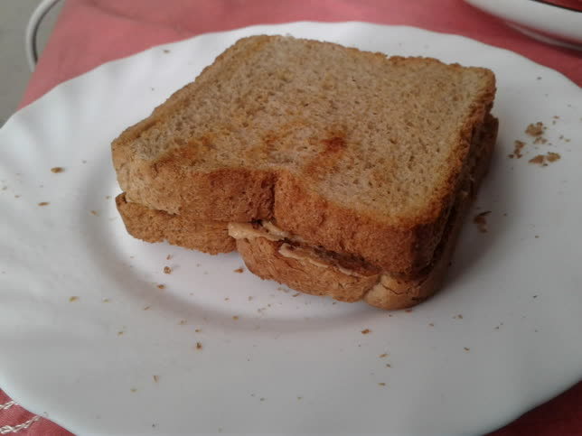

While I'm not a chef myself, and I barely cook, I know that activity-driven therapy is a real thing. This can include making any personal project of any kind (e.g., installing Gentoo), or maybe sometimes just "singing" regardless of how terrible your voice is. But the main point of this is doing it to become more mindful and aware.
Mindfulness is the practice of remaining present in the moment and not judging the thoughts and emotions you're experiencing. In other words, you focus on what you're doing at the moment and "bring yourself to reality." Cooking is just one example of that, which is what we'll do today. And we'll cook something ridiculously simple: peanut butter on toast.
This is actually taken from Matt Haig's The Comfort Book (kek). I'll leave the recipe as it is:
Peanut Butter on Toast
You will need:
Two slices of bread
A jar of peanut butter
Method:
- Place the slices of bread in a toaster.
- Wait a minute or two. Remove the toasted bread from the toaster and transfer it to a plate.
- With a knife, spread the peanut butter generously onto one side of the toast. Spread the peanut butter with the knife always traveling in the same direction over the toast. I don’t know why. It just feels better this way.
- Don’t rush it. Set the mood of appreciation by moving the knife at a steady, Tai Chi kind of pace. This moment should have the integrity of a religious ritual.
- Take the plate of toast to your favorite seat. Sit. Compose yourself. Be fully aware of how wondrous it is to be sentient. To be aware you are not only alive as a human being but as a human being about to eat some peanut butter on toast.
- Close your eyes as you take the first bite. Let your worries float by, untethered from their hooks, as you appreciate this living moment of taste and pleasure.
- If you really don’t like peanut butter, this ritual of gratitude and attentiveness has also been proven to work with marmalade.
Here's the toast; it feels really good having made something as small as this, and it tastes good! :) (It reminds me of Snickers lol)
